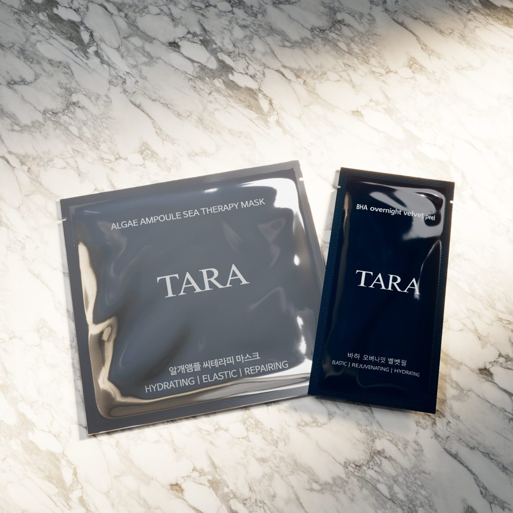

Guide
How often should you use a sheet mask?

A sheet mask feels indulgent, so it's tempting to use one every day. But more is not always better. Here is a simple way to decide how often a sheet mask belongs in your week.
The short answer
For most people, two or three times a week is plenty. That's the same rhythm we suggest for our Algae Ampoule Sea Therapy Mask. A sheet mask is an extra boost of hydration on top of your daily routine, not a replacement for it.
Adjust to your skin
- Skin feels tight or dry: start with two masks a week and see how your skin looks the next morning.
- Skin looks dull or tired: three masks a week, spaced out, can help it look fresher and more hydrated.
- Skin is sensitive: begin with one mask a week. If your skin looks and feels comfortable, add a second.
Pay attention to how your face looks and feels. If it looks flushed or feels uncomfortable, use the mask less often.
How long to leave it on
About 20 minutes. Don't wait until the sheet dries out. Set a timer so you don't forget.
Where it fits in your routine
Cleanse and tone first. Our Algae Marine Toner is a good first step. Then smooth on the sheet mask and leave it for 20 minutes. If you use an ampoule, apply it before the mask, or skip it that night since the mask essence does a similar job.
What to do after
- Remove the sheet and pat the leftover essence into your face and neck. No need to rinse.
- Follow with lotion such as our Algae Marine Lotion, and cream if your skin is dry.
Mask nights and rest nights
An easy plan is to mask on set nights, for example Monday, Wednesday and Saturday, and keep the other nights simple with your usual steps. See the full TARA routine for the order of every step, morning and night.
Sea Therapy Mask on Amazon Details
TARA has been featured in Vogue Korea, Allure Korea and Cosmopolitan Korea.